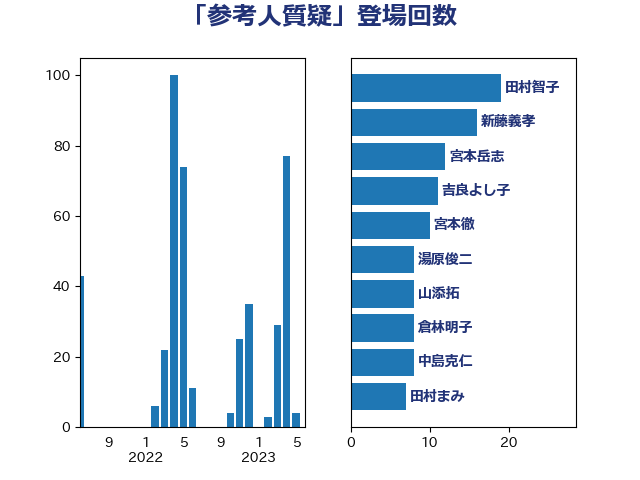

単語「参考人質疑」

| 田村智子 | 日本共産党 | 19 回 |
| 新藤義孝 | 自由民主党 | 16 回 |
| 宮本岳志 | 日本共産党 | 12 回 |
| 吉良よし子 | 日本共産党 | 11 回 |
| 宮本徹 | 日本共産党 | 10 回 |
| 湯原俊二 | 立憲民主党 | 8 回 |
| 山添拓 | 日本共産党 | 8 回 |
| 倉林明子 | 日本共産党 | 8 回 |
| 中島克仁 | 立憲民主党 | 8 回 |
| 田村まみ | 国民民主党 | 7 回 |
| 本村伸子 | 日本共産党 | 7 回 |
| 川田龍平 | 立憲民主党 | 7 回 |
| 田村貴昭 | 日本共産党 | 6 回 |
| 斎藤嘉隆 | 立憲民主党 | 6 回 |
| 高良鉄美 | 無所属 | 5 回 |
| 足立康史 | 日本維新の会 | 5 回 |
| 舩後靖彦 | れいわ新選組 | 5 回 |
| 石橋通宏 | 立憲民主党 | 5 回 |
| 東徹 | 日本維新の会 | 5 回 |
| 天畠大輔 | れいわ新選組 | 5 回 |
| ながえ孝子 | 無所属 | 5 回 |
| 金子恵美 | 立憲民主党 | 4 回 |
| 西村智奈美 | 立憲民主党 | 4 回 |
| 芳賀道也 | 国民民主党 | 4 回 |
| 紙智子 | 日本共産党 | 4 回 |
| 笠井亮 | 日本共産党 | 4 回 |
| 福島伸享 | 無所属 | 4 回 |
| 河西宏一 | 公明党 | 4 回 |
| 森屋隆 | 立憲民主党 | 4 回 |
| 岩渕友 | 日本共産党 | 4 回 |
| 小沼巧 | 立憲民主党 | 4 回 |
| 奥野総一郎 | 立憲民主党 | 4 回 |
| 井上哲士 | 日本共産党 | 4 回 |
| 金子恭之 | 自由民主党 | 3 回 |
| 道下大樹 | 立憲民主党 | 3 回 |
| 西岡秀子 | 国民民主党 | 3 回 |
| 臼井正一 | 自由民主党 | 3 回 |
| 矢倉克夫 | 公明党 | 3 回 |
| 田中健 | 国民民主党 | 3 回 |
| 柴田巧 | 日本維新の会 | 3 回 |
| 早稲田ゆき | 立憲民主党 | 3 回 |
| 後藤茂之 | 自由民主党 | 3 回 |
| 山崎正恭 | 公明党 | 3 回 |
| 大野泰正 | 自由民主党 | 3 回 |
| 塩川鉄也 | 日本共産党 | 3 回 |
| 國重徹 | 公明党 | 3 回 |
| 吉川元 | 立憲民主党 | 3 回 |
| 吉井章 | 自由民主党 | 3 回 |
| 古川元久 | 国民民主党 | 3 回 |
| 住吉寛紀 | 日本維新の会 | 3 回 |
| 仁比聡平 | 日本共産党 | 3 回 |
| 井坂信彦 | 立憲民主党 | 3 回 |
| こやり隆史 | 自由民主党 | 3 回 |
| 高橋千鶴子 | 日本共産党 | 2 回 |
| 高木かおり | 日本維新の会 | 2 回 |
| 階猛 | 立憲民主党 | 2 回 |
| 舟山康江 | 国民民主党 | 2 回 |
| 竹内真二 | 公明党 | 2 回 |
| 礒崎哲史 | 国民民主党 | 2 回 |
| 石垣のりこ | 立憲民主党 | 2 回 |
| 漆間譲司 | 日本維新の会 | 2 回 |
| 渡辺博道 | 自由民主党 | 2 回 |
| 池下卓 | 日本維新の会 | 2 回 |
| 森本真治 | 立憲民主党 | 2 回 |
| 梅村聡 | 日本維新の会 | 2 回 |
| 松沢成文 | 日本維新の会 | 2 回 |
| 杉尾秀哉 | 立憲民主党 | 2 回 |
| 斉藤鉄夫 | 公明党 | 2 回 |
| 打越さく良 | 立憲民主党 | 2 回 |
| 岸真紀子 | 立憲民主党 | 2 回 |
| 山本太郎 | れいわ新選組 | 2 回 |
| 山井和則 | 立憲民主党 | 2 回 |
| 山下芳生 | 日本共産党 | 2 回 |
| 宮崎雅夫 | 自由民主党 | 2 回 |
| 宮口治子 | 立憲民主党 | 2 回 |
| 大石あきこ | れいわ新選組 | 2 回 |
| 北神圭朗 | 無所属 | 2 回 |
| 佐々木さやか | 公明党 | 2 回 |
| 一谷勇一郎 | 日本維新の会 | 2 回 |
| 齋藤健 | 自由民主党 | 1 回 |
| 高橋克法 | 自由民主党 | 1 回 |
| 高木宏壽 | 自由民主党 | 1 回 |
| 馬場伸幸 | 日本維新の会 | 1 回 |
| 須藤元気 | 無所属 | 1 回 |
| 青木愛 | 立憲民主党 | 1 回 |
| 阿部司 | 日本維新の会 | 1 回 |
| 長谷川淳二 | 自由民主党 | 1 回 |
| 長友慎治 | 国民民主党 | 1 回 |
| 鈴木義弘 | 国民民主党 | 1 回 |
| 金城泰邦 | 公明党 | 1 回 |
| 野田国義 | 立憲民主党 | 1 回 |
| 赤嶺政賢 | 日本共産党 | 1 回 |
| 美延映夫 | 日本維新の会 | 1 回 |
| 空本誠喜 | 日本維新の会 | 1 回 |
| 稲津久 | 公明党 | 1 回 |
| 石川大我 | 立憲民主党 | 1 回 |
| 石川博崇 | 公明党 | 1 回 |
| 石井章 | 日本維新の会 | 1 回 |
| 石井正弘 | 自由民主党 | 1 回 |
| 牧義夫 | 立憲民主党 | 1 回 |
| 渡辺猛之 | 自由民主党 | 1 回 |
| 清水貴之 | 日本維新の会 | 1 回 |
| 浜地雅一 | 公明党 | 1 回 |
| 浅野哲 | 国民民主党 | 1 回 |
| 沢田良 | 日本維新の会 | 1 回 |
| 櫛渕万里 | れいわ新選組 | 1 回 |
| 横沢高徳 | 立憲民主党 | 1 回 |
| 根本匠 | 自由民主党 | 1 回 |
| 柳本顕 | 自由民主党 | 1 回 |
| 柚木道義 | 立憲民主党 | 1 回 |
| 松本尚 | 自由民主党 | 1 回 |
| 松本剛明 | 自由民主党 | 1 回 |
| 東国幹 | 自由民主党 | 1 回 |
| 本田顕子 | 自由民主党 | 1 回 |
| 末松信介 | 自由民主党 | 1 回 |
| 木村英子 | れいわ新選組 | 1 回 |
| 平木大作 | 公明党 | 1 回 |
| 川崎ひでと | 自由民主党 | 1 回 |
| 川合孝典 | 国民民主党 | 1 回 |
| 岩谷良平 | 日本維新の会 | 1 回 |
| 山本有二 | 自由民主党 | 1 回 |
| 山口壯 | 自由民主党 | 1 回 |
| 尾崎正直 | 自由民主党 | 1 回 |
| 小野泰輔 | 日本維新の会 | 1 回 |
| 小熊慎司 | 立憲民主党 | 1 回 |
| 小川淳也 | 立憲民主党 | 1 回 |
| 寺田稔 | 自由民主党 | 1 回 |
| 安江伸夫 | 公明党 | 1 回 |
| 守島正 | 日本維新の会 | 1 回 |
| 大口善徳 | 公明党 | 1 回 |
| 嘉田由紀子 | 無所属 | 1 回 |
| 吉田統彦 | 立憲民主党 | 1 回 |
| 古川禎久 | 自由民主党 | 1 回 |
| 友納理緒 | 自由民主党 | 1 回 |
| 北側一雄 | 公明党 | 1 回 |
| 加藤勝信 | 自由民主党 | 1 回 |
| 前川清成 | 日本維新の会 | 1 回 |
| 佐藤英道 | 公明党 | 1 回 |
| 伊藤孝恵 | 国民民主党 | 1 回 |
| 仁木博文 | 無所属 | 1 回 |
| 井上信治 | 自由民主党 | 1 回 |
| 中川正春 | 立憲民主党 | 1 回 |
| 中川康洋 | 公明党 | 1 回 |
| 上野通子 | 自由民主党 | 1 回 |
| 上田英俊 | 自由民主党 | 1 回 |
| 上田清司 | 国民民主党 | 1 回 |
| 三木圭恵 | 日本維新の会 | 1 回 |
| たがや亮 | れいわ新選組 | 1 回 |